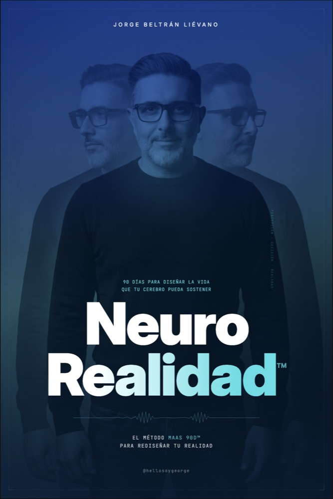
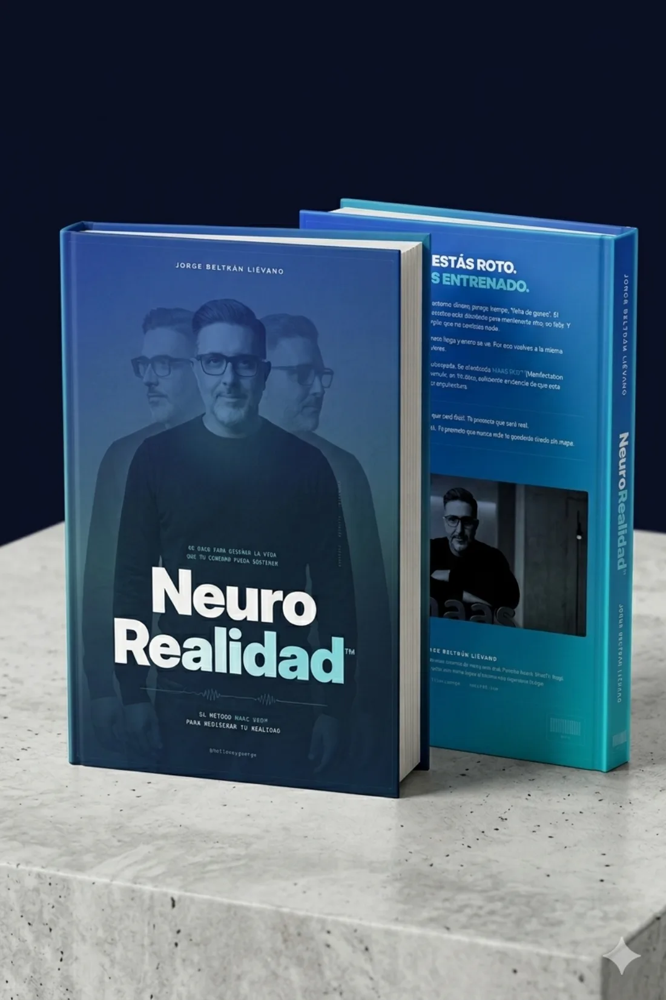

No estás roto.
Estás entrenado.
Llevas años sabiendo exactamente qué hacer y, aun así, no lo haces. No es falta de disciplina ni de ganas: nadie te enseñó a cambiar de verdad. NeuroRealidad™ es el camino, paso a paso, para volver a ser quien siempre supiste que podías ser.

Tu cerebro no busca tu felicidad. Busca tu supervivencia.
Está diseñado para mantenerte vivo, no para hacerte feliz. Y su forma favorita de protegerte es simple: que no cambies nada. Por eso cada intento de mejorar se siente como nadar contra la corriente, y vuelves al punto de partida una y otra vez. No es debilidad. No es falta de carácter. Es biología. Y la biología se puede reentrenar.
Si te reconoces aquí, este libro es tuyo.
No te falta información. Te sobra. Lo que duele es otra cosa, y la reconoces al instante.
Marzo te encuentra igual que diciembre.
Empezaste el año decidido. El plan era impecable. Pasaron los meses y sigues en el mismo lugar, con la misma sensación en el pecho.
Cursos a medias, intentos abandonados.
Libros sin terminar, apps que duraron dos semanas, propósitos que se apagaron. Y una vocecita que dice "otra vez no".
Brillante por fuera, atascado por dentro.
En tu trabajo todos confían en ti. En tu propia vida no logras aplicar esa misma claridad. Y casi nadie lo sabe.
El cansancio de empezar de nuevo.
No es que no quieras. Estás agotado de prometerte cosas y volver a fallarte. De vivir por debajo de lo que sabes que eres.
Noventa días, en tres movimientos.
Nada de cambios de la noche a la mañana. Un recorrido honesto, pensado para que esta vez el cambio se quede.
Desmontaje
Ves con honestidad cómo funcionas hoy y por qué. Sin culpa. Empiezas a soltar los automatismos que te tienen atascado.
Arquitectura
Reconstruyes, pieza por pieza, una nueva forma de vivir tu día. Lo correcto empieza a costar menos.
Sostenimiento
Lo nuevo deja de ser esfuerzo y se vuelve quien eres. El cambio se queda cuando dejas de vigilarlo.
No te prometo que será fácil.
Te prometo que será real.
No te prometo que nunca te caerás. Te prometo que nunca más te quedarás tirado sin mapa.

No vas a leer un libro. Te vas a reconocer en él.
El alivio de entenderte
Por fin un nombre para lo que te pasa: no estás roto, estás entrenado. Y por qué eso lo cambia todo.
Un mapa, no una arenga
El recorrido completo de los 90 días, con pasos que puedes empezar el mismo día en que cierras el libro.
Una forma de medir tu avance
Una manera simple y honesta de ver, día a día, cuánto te acercas a la coherencia que buscas.
La persona que sales siendo
Al terminarlo no tienes más información. Tienes una versión tuya distinta: la que ejecuta y se sostiene.
Lo que dicen quienes ya empezaron el camino.
"Lo abrí esperando otro libro de moda. El capítulo del Desmontaje me incomodó, me vi retratado tal cual. Voy 40 días y por primera vez no abandoné en la semana dos."
"No es un libro para sentirte bien. Es para ordenarte la cabeza. Lo subrayé entero y volví sobre el capítulo de las decisiones tres veces."
"Me lo pasó mi socio. Lo leí en dos noches y el lunes ya hacía las cosas distinto. No me pasaba con un libro desde la universidad."
"Vivo en Miami hace diez años y probé de todo: terapia, apps, retiros carísimos. Este libro me dio lo único que faltaba, un mapa que sí podía seguir sola."
"Soy ingeniero, necesito que las cosas tengan lógica. Es el primer libro del tema que no me sonó a humo. Lo terminé y lo volví a empezar al día siguiente."
"Lo regalé a tres personas de mi equipo apenas lo terminé. Creo que eso lo resume mejor que cualquier reseña que pueda escribir."
"Sigo a George hace años. El libro es él en su mejor momento: directo, sin relleno, te confronta pero con cariño. Lo necesitaba y no lo sabía."
"Cada enero la misma lista de propósitos, cada marzo el mismo punto. Hice los 90 días del libro y este diciembre, por fin, fue diferente."
"No me gusta la autoayuda, y este no es autoayuda. Es como si alguien por fin te explicara cómo funciona la máquina por dentro."
El primer paso cuesta menos de lo que crees.
El método completo, en tus manos, sin comprometerte a nada más. Si el libro te transforma, el resto del camino te estará esperando.
El Libro
- El método NeuroRealidad™ completo
- Las tres fases de los 90 días
- Kindle y tapa blanda en Amazon
- Tuyo para siempre, sin suscripción
Acompañamiento
- La app que sostiene tu camino día a día
- Tu copiloto MAAsy
- Cancelas cuando quieras
- 30 días gratis si ya leíste el libro
Camino completo
- Un año entero de transformación
- App, Academy y comunidad
- Quienes hacen el mismo camino
- Todo el ecosistema MAAS 90D™
Lo que quizás te preguntas
¿Es otro libro de autoayuda?
No. La autoayuda te dice "tú puedes" y te deja igual. Este libro te explica por qué te cuesta y te da un camino concreto para cambiarlo. Y lo tienes completo sin suscribirte a nada.
¿No será otra promesa que no se cumple?
Entiendo el cansancio, lo viviste muchas veces. Por eso aquí no hay magia de siete días ni frases bonitas: hay un recorrido real de 90 días, pensado para que esta vez sí se quede.
¿Necesito la app para que me sirva?
No. El libro es completo por sí solo. La app existe para acompañarte después, si quieres, pero el cambio empieza solo contigo y estas páginas.
¿Y si soy muy escéptico con estos temas?
Mejor. Este libro no te pide creer en nada: te pide leer, reconocerte y probar. Está escrito para gente analítica que ya no se traga el humo.
¿Para quién no es este libro?
Para quien busca sentirse bien un ratito y seguir igual. Si solo quieres motivación express, hay opciones más baratas. Esto es para quien de verdad está listo para cambiar.
Tu cerebro necesita evidencia nueva.
Dásela. Lee el primer capítulo gratis: si te reconoces en las primeras páginas, ya sabrás que este es tu camino.
Entrega inmediata en Kindle · El paso más pequeño hacia la versión de ti que sí ejecuta